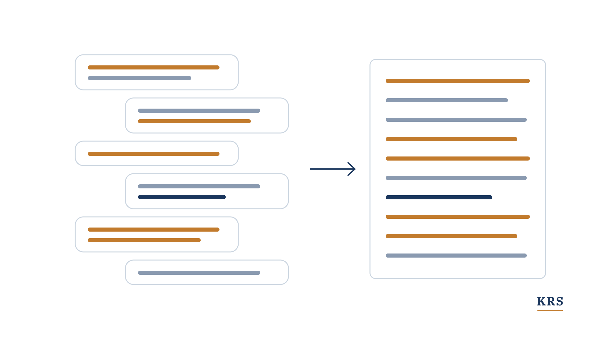
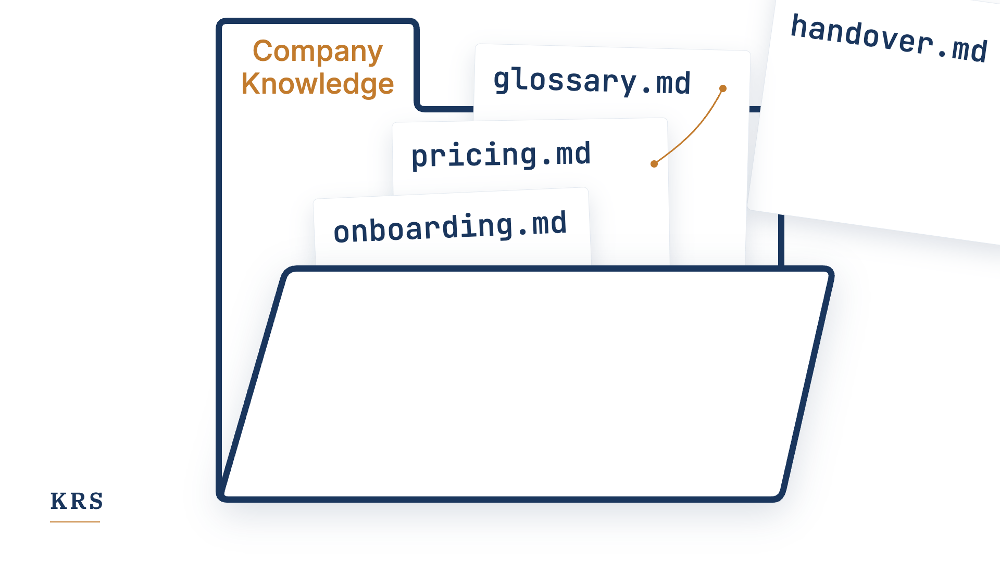

Fachartikel
Wissen aus der Praxis
Was wir in Projekten, Interviews und unseren eigenen Meetings über Erfahrungswissen lernen. Die meisten Artikel sind zuerst auf LinkedIn erschienen.
-
24 % im Schnitt
3 von 5 in der AbteilungDer Wissensabfluss passiert nicht im Durchschnitt
Weiterlesen → -

Warum wir jedes Meeting-Transkript behalten
Weiterlesen → -
Zweckgerichtete Wissensbasen mit Experteninterviews
Weiterlesen → -

Das beste Format für Firmenwissen ist vielleicht ein Ordner mit Markdown-Dateien
Weiterlesen → -
HBR-Studie
„Trendslop“Offenbar bin ich auch anfällig für Trendslop
Weiterlesen →
Fragen zu einem Thema?
Schreiben Sie uns eine kurze E-Mail. Wir melden uns direkt bei Ihnen.
info@krs-gmbh.de